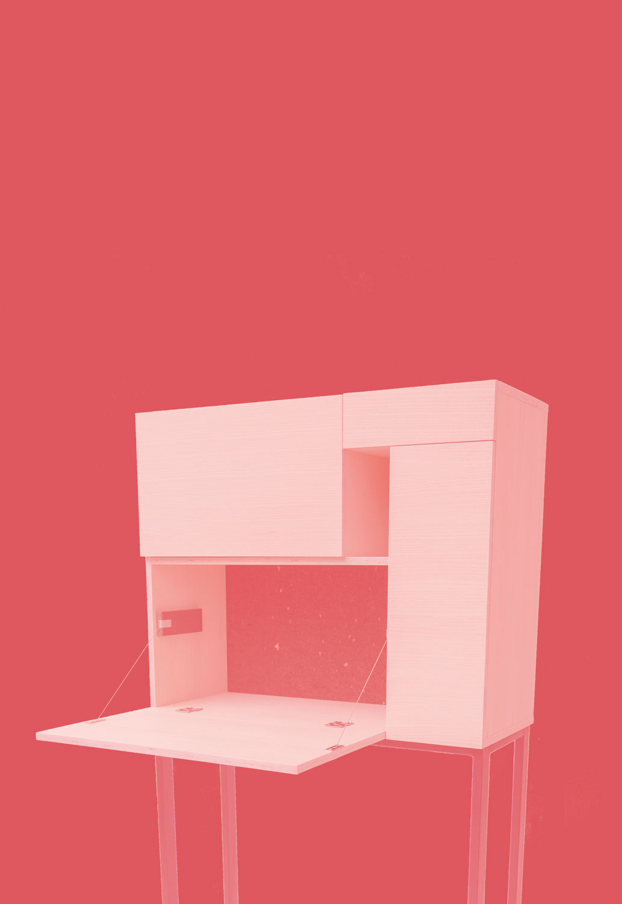
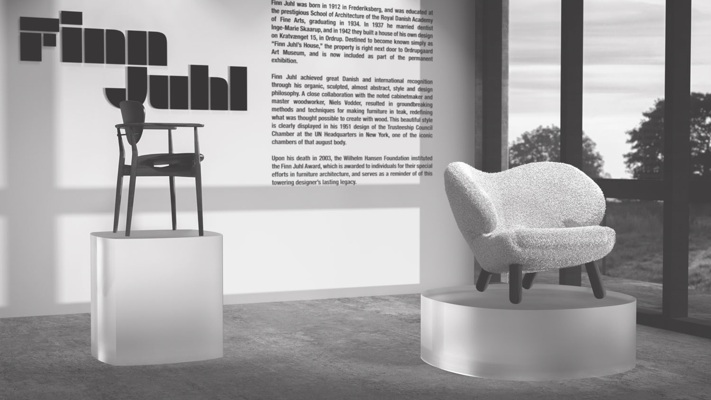
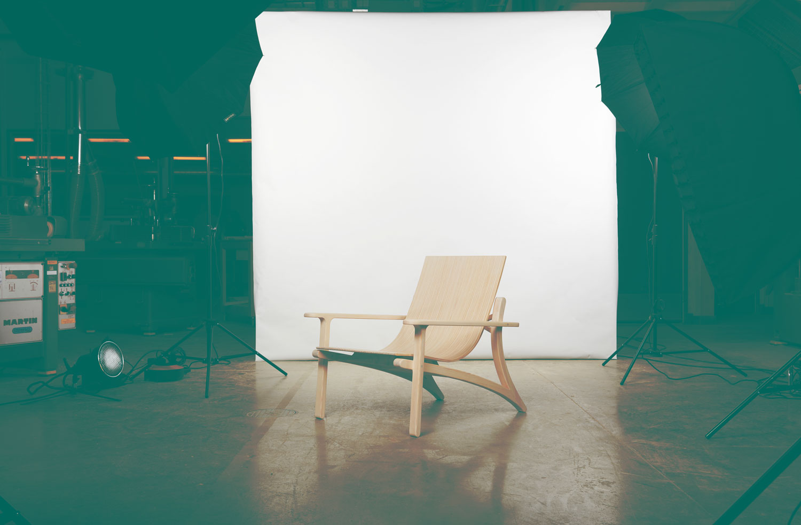

Grid A modern bureau designed, developed and manufactured by me and three classmates for a schoolproject. 
3D Modeling of Finn Juhl A 3D visualization of The Pelican Chair and 109 Chair designed by Finn Juhl. Made in 3D Studio Max. 
Tallbarret A lounge chair designed, developed and manufactured by me and two classmates during my education on Product Development and Furniture Design. 